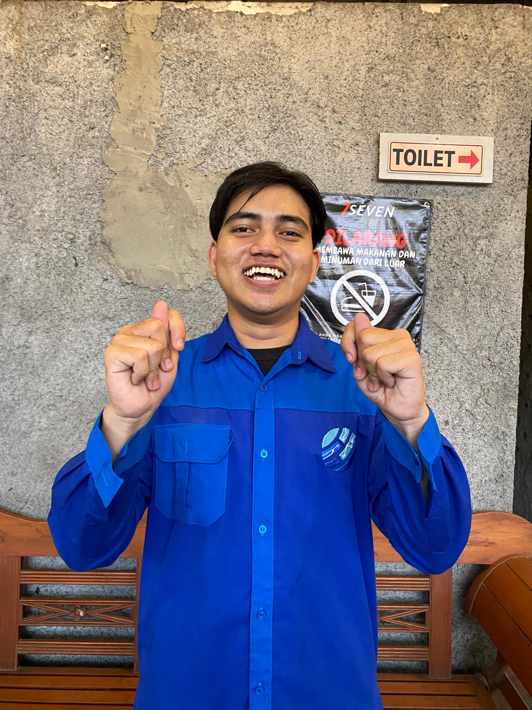
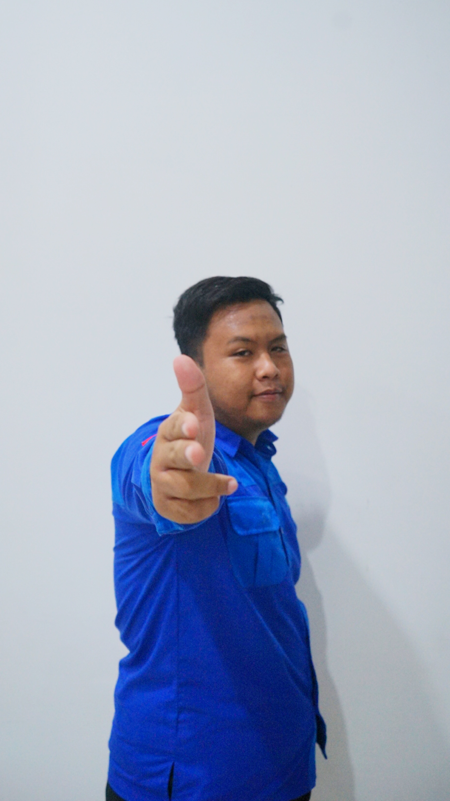

Unusida
Jawa Timur, Sidoarjo
2022 - 2026
📚 Profil
M Syifaul Anam
Sipak
Jangan meremehkan musuh.
Nadhif Fathur Rahman
Nadip
Mata kuliah yang membahas limit, turunan, integral, dan aplikasinya dalam teknik dan sains.
Daniel Achmad Farizki
Danil
Woi bro lollllllllllll.
Devandra Albansyah Azhar
Depan
Mata kuliah yang membahas limit, turunan, integral, dan aplikasinya dalam teknik dan sains.
Dwi Fuji Antika
Dwi
Mata kuliah yang membahas limit, turunan, integral, dan aplikasinya dalam teknik dan sains.

Fitto Ardiansyah
Fito
Mata kuliah yang membahas limit, turunan, integral, dan aplikasinya dalam teknik dan sains.
M. Huda Noor Setyawan
huda
Mata kuliah yang membahas limit, turunan, integral, dan aplikasinya dalam teknik dan sains.
Naufal Eurasia Negara
Nopal
Mata kuliah yang membahas limit, turunan, integral, dan aplikasinya dalam teknik dan sains.
Ferdie Arya Jantanu
Perdi
Mata kuliah yang membahas limit, turunan, integral, dan aplikasinya dalam teknik dan sains.

Nur Syaifudin
Udin
Mata kuliah yang membahas limit, turunan, integral, dan aplikasinya dalam teknik dan sains.
Moch. Rafli Muchibbin
Rapli
Mata kuliah yang membahas limit, turunan, integral, dan aplikasinya dalam teknik dan sains.
Moh. Raihan Zacky R
Rehan
Mata kuliah yang membahas limit, turunan, integral, dan aplikasinya dalam teknik dan sains.
Alfia Rohmah Safara
Saroh
Mata kuliah yang membahas limit, turunan, integral, dan aplikasinya dalam teknik dan sains.